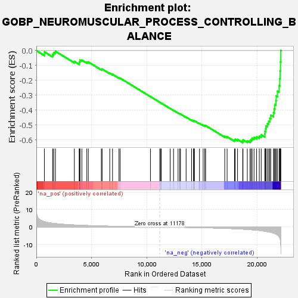
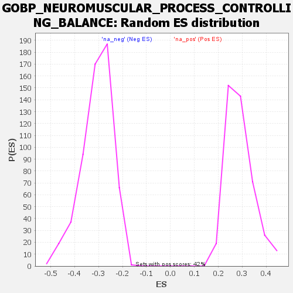

| | | Dataset | deseq_dnfgfr_res_for_gsea |
| Phenotype | NoPhenotypeAvailable |
| Upregulated in class | na_neg |
| GeneSet | GOBP_NEUROMUSCULAR_PROCESS_CONTROLLING_BALANCE |
| Enrichment Score (ES) | -0.61849564 |
| Normalized Enrichment Score (NES) | -2.0135071 |
| Nominal p-value | 0.0 |
| FDR q-value | 0.01170511 |
| FWER p-Value | 0.036 |
Table: GSEA Results Summary

Fig 1: Enrichment plot: GOBP_NEUROMUSCULAR_PROCESS_CONTROLLING_BALANCE
Profile of the Running ES Score & Positions of GeneSet Members on the Rank Ordered List
| SYMBOL | RANK IN GENE LIST | RANK METRIC SCORE | RUNNING ES | CORE ENRICHMENT | | 1 | Hexb | 726 | 3.054 | -0.0085 | No |
| 2 | Aplp2 | 1474 | 2.138 | -0.0252 | No |
| 3 | Slc1a3 | 1568 | 2.056 | -0.0130 | No |
| 4 | Gm2a | 1726 | 1.950 | -0.0045 | No |
| 5 | Nrxn1 | 3443 | 1.158 | -0.0729 | No |
| 6 | Hexa | 3891 | 1.020 | -0.0850 | No |
| 7 | Clic5 | 3894 | 1.020 | -0.0769 | No |
| 8 | Ei24 | 3944 | 1.005 | -0.0711 | No |
| 9 | Cdh23 | 3949 | 1.003 | -0.0633 | No |
| 10 | Ap1s2 | 4123 | 0.958 | -0.0635 | No |
| 11 | Myo7a | 4570 | 0.852 | -0.0769 | No |
| 12 | Ush1g | 4707 | 0.818 | -0.0765 | No |
| 13 | Cln8 | 5889 | 0.576 | -0.1253 | No |
| 14 | Gaa | 5957 | 0.564 | -0.1239 | No |
| 15 | App | 6649 | 0.458 | -0.1515 | No |
| 16 | Pafah1b1 | 6901 | 0.422 | -0.1595 | No |
| 17 | Psap | 7484 | 0.342 | -0.1831 | No |
| 18 | Camta1 | 7591 | 0.329 | -0.1853 | No |
| 19 | Pou4f2 | 10337 | 0.031 | -0.3092 | No |
| 20 | Gigyf2 | 11178 | -0.000 | -0.3473 | No |
| 21 | Aldh1a3 | 11271 | -0.011 | -0.3513 | No |
| 22 | Nbn | 11309 | -0.014 | -0.3529 | No |
| 23 | Aars | 12123 | -0.100 | -0.3889 | No |
| 24 | Igdcc3 | 12428 | -0.108 | -0.4018 | No |
| 25 | Hmx3 | 12839 | -0.150 | -0.4192 | No |
| 26 | Rubie | 12995 | -0.167 | -0.4248 | No |
| 27 | Cln3 | 13056 | -0.175 | -0.4262 | No |
| 28 | Pou4f3 | 13567 | -0.225 | -0.4474 | No |
| 29 | Clrn1 | 14067 | -0.283 | -0.4678 | No |
| 30 | Nr4a3 | 14238 | -0.305 | -0.4730 | No |
| 31 | Bloc1s4 | 14272 | -0.309 | -0.4721 | No |
| 32 | Tifab | 14320 | -0.318 | -0.4716 | No |
| 33 | Abr | 14779 | -0.374 | -0.4894 | No |
| 34 | Nefl | 15112 | -0.429 | -0.5010 | No |
| 35 | Ush1c | 15260 | -0.450 | -0.5040 | No |
| 36 | Rac3 | 15335 | -0.463 | -0.5037 | No |
| 37 | Foxs1 | 17067 | -0.765 | -0.5759 | No |
| 38 | Neurog1 | 17281 | -0.815 | -0.5791 | No |
| 39 | Myo5a | 17954 | -0.988 | -0.6016 | No |
| 40 | Tpp1 | 18015 | -1.002 | -0.5963 | No |
| 41 | Rest | 18228 | -1.069 | -0.5974 | No |
| 42 | Ptprq | 18696 | -1.235 | -0.6086 | Yes |
| 43 | Kcnma1 | 18721 | -1.241 | -0.5998 | Yes |
| 44 | Pcdh15 | 19112 | -1.395 | -0.6063 | Yes |
| 45 | Rbfox2 | 19359 | -1.500 | -0.6055 | Yes |
| 46 | Pou4f1 | 19454 | -1.550 | -0.5973 | Yes |
| 47 | Atp2b2 | 19552 | -1.604 | -0.5889 | Yes |
| 48 | Pde8b | 19721 | -1.691 | -0.5830 | Yes |
| 49 | Ankfn1 | 19956 | -1.818 | -0.5791 | Yes |
| 50 | Tnr | 20197 | -1.960 | -0.5743 | Yes |
| 51 | Herc1 | 20371 | -2.084 | -0.5655 | Yes |
| 52 | Dlg4 | 20700 | -2.399 | -0.5612 | Yes |
| 53 | Rbfox1 | 20707 | -2.408 | -0.5422 | Yes |
| 54 | Shank1 | 20776 | -2.495 | -0.5254 | Yes |
| 55 | Cntnap1 | 20800 | -2.524 | -0.5062 | Yes |
| 56 | Cacna1a | 20935 | -2.675 | -0.4909 | Yes |
| 57 | Nkx6-2 | 21052 | -2.817 | -0.4737 | Yes |
| 58 | Grin2c | 21149 | -2.949 | -0.4545 | Yes |
| 59 | Abl2 | 21235 | -3.044 | -0.4340 | Yes |
| 60 | Abl1 | 21486 | -3.496 | -0.4174 | Yes |
| 61 | Gpr88 | 21547 | -3.607 | -0.3913 | Yes |
| 62 | Camk2b | 21603 | -3.757 | -0.3638 | Yes |
| 63 | Myh10 | 21704 | -4.034 | -0.3361 | Yes |
| 64 | Jph3 | 21729 | -4.122 | -0.3043 | Yes |
| 65 | Bcr | 21839 | -4.555 | -0.2728 | Yes |
| 66 | Adcy5 | 21990 | -5.502 | -0.2357 | Yes |
| 67 | Jph4 | 22048 | -6.164 | -0.1890 | Yes |
| 68 | Shank3 | 22081 | -6.739 | -0.1366 | Yes |
| 69 | Sox2 | 22115 | -7.768 | -0.0761 | Yes |
| 70 | Nlgn2 | 22148 | -9.797 | 0.0007 | Yes |
Table: GSEA details [plain text format]

Fig 2: GOBP_NEUROMUSCULAR_PROCESS_CONTROLLING_BALANCE: Random ES distribution
Gene set null distribution of ES for GOBP_NEUROMUSCULAR_PROCESS_CONTROLLING_BALANCE